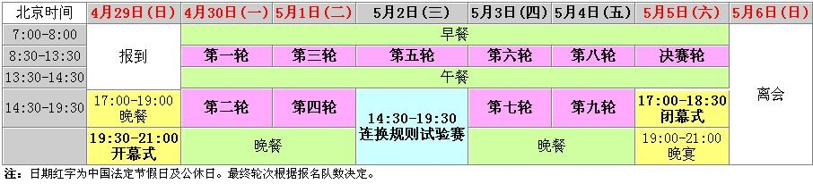

中国五子棋团体公开赛大赛筹委会成立
#1 中国五子棋团体公开赛大赛筹委会成立 作者：有志青年 发表时间：2012-2-6 9:45:10
2012中国五子棋团体公开赛将于2012年4月29日-5月5日在北京举行，大赛筹委会昨天成立。［此帖子已被 有志青年 在 2012-2-6 9:45:23 编辑过］
［此帖子已被 有志青年 在 2012-2-6 12:40:27 编辑过］
［此帖子已被 有志青年 在 2012-2-7 15:02:33 编辑过］
［此帖子已被 有志青年 在 2012-2-7 15:10:48 编辑过］
#2 Re:中国五子棋团体公开赛大赛筹委会成立 作者：王安石 发表时间：2012-2-6 10:28:02
五子团体赛报名条件是怎么样的，有明白的能告诉我下吗，谢谢啊，呵呵呵
［此帖子已被 有志青年 在 2012-2-7 15:24:28 编辑过］
#3 Re:王安石【==Re:中国五子棋团体公开赛大赛筹委会成立==】 作者：励精 发表时间：2012-2-6 11:29:55
引用：见ShowPost.asp?ThreadID=17031
原文由 王安石 发表于 2012-2-6 10:28:02 :五子团体赛报名条件是怎么样的，有明白的能告诉我下吗，谢谢啊，呵呵呵
［此帖子已被 有志青年 在 2012-2-7 15:25:58 编辑过］
#4 Re:中国五子棋团体公开赛大赛筹委会成立 作者：小元 发表时间：2012-2-6 11:51:10
世界杯团体赛改成团体公开赛了？［此帖子已被 有志青年 在 2012-2-7 15:24:57 编辑过］
#5 Re:中国五子棋团体公开赛大赛筹委会成立 作者：小丸.net 发表时间：2012-2-6 20:49:25
人员名单呢？［此帖子已被 有志青年 在 2012-2-7 15:25:08 编辑过］
#6 Re:中国五子棋团体公开赛大赛筹委会成立 作者：掌棋宣传员 发表时间：2012-2-7 10:41:40
楼上你的话真是胡说八道，俗话说，“两个黄鹂鸣翠柳，不知所云；一行白鹭上青天，不知所止”。本来不想和你辩论，今天气愤不过，和你理论一番。 我国宪法写得清清楚楚：“一夜夫妻百日恩，七楼以上才有电梯”。这个想必你知道，既然知道，你就不能断章取义，就算是天气预报，它还有不准的时候呢！再者说了，那中国银行也不是你一家开的。人家马拉多纳都结婚了，你还拿着粮票顶什么用呢。 真是滑天下之大稽。 前些日子，全国人大刚刚开过会，郑重声明：“中国不搞多party制，存栏母猪给补贴”。多好的事呢，楞让你这号人给搅混了。真是败事有余，成事不足。所以，孔子曰：“君子坦荡荡，小猪四条腿，大爷不怕小八卦，迎风撒尿泼一身”。这些高深的道理，跟你说了，估计你一时半会也琢磨不透。 我知道你肯定说你知道回字的四种写法，可是不要忘了，计算机目前用的是二进制原理。眼下中国最主要的是，要分清那些属于敌我矛盾。远看忽忽悠悠，近看飘飘摇摇，在江里一起一冒，有人说是葫芦，有人说是瓢，俩人打赌江边瞧，原来是俩和尚洗澡！连这些都不懂，赶紧洗洗睡吧。 所以说：“病入＊＊不可怕，笑熬浆糊最KB”！ 流氓会武术，谁也挡不住；懒得跟你理论了。明天太阳还是从东方升起．．．．．［ 菜包先生 于 2012-2-7 11:21:38 时花20金币送鲜花一朵］
［此帖子已被 有志青年 在 2012-2-7 15:25:17 编辑过］
［ 釣鱼岛岛主 于 2012-2-7 16:58:55 时花20金币送鲜花一朵］
［ 釣鱼岛岛主 于 2012-2-7 16:58:58 时花20金币送鲜花一朵］
#7 Re:掌棋宣传员【==Re:中国五子棋团体公开赛大赛筹委会成立==】 作者：臭脚不丫儿 发表时间：2012-2-7 11:06:59
引用：哈哈，真逗~~~
原文由 掌棋宣传员 发表于 2012-2-7 10:41:40 :
楼上你的话真是胡说八道，俗话说，“两个黄鹂鸣翠柳，不知所云；一行白鹭上青天，不知所止”。本来不想和你辩论，今天气愤不过，和你理论一番。 我国宪法写得清清楚楚：“一夜夫妻百日恩，七楼以上才有电梯”。这个想必你知道，既然知道，你就不能断章取义，就算是天气预报，它还有不准的时候呢！再者说了，那中国银行也不是你一家开的。人家马拉多纳都结婚了，你还拿着粮票顶什么用呢。 真是滑天下之大稽。 前些日子，全国人大刚刚开过会，郑重声明：“中国不搞多party制，存栏母猪给补贴”。多好的事呢，楞让你这号人给搅混了。真是败事有余，成事不足。所以，孔子曰：“君子坦荡荡，小猪四条腿，大爷不怕小八卦，迎风撒尿泼一身”。这些高深的道理，跟你说了，估计你一时半会也琢磨不透。 我知道你肯定说你知道回字的四种写法，可是不要忘了，计算机目前用的是二进制原理。眼下中国最主要的是，要分清那些属于敌我矛盾。远看忽忽悠悠，近看飘飘摇摇，在江里一起一冒，有人说是葫芦，有人说是瓢，俩人打赌江边瞧，原来是俩和尚洗澡！连这些都不懂，赶紧洗洗睡吧。 所以说：“病入＊＊不可怕，笑熬浆糊最KB”！ 流氓会武术，谁也挡不住；懒得跟你理论了。明天太阳还是从东方升起．．．．．
［此帖子已被 有志青年 在 2012-2-7 15:25:29 编辑过］
#8 Re:中国五子棋团体公开赛大赛筹委会成立 作者：我心飞翔 发表时间：2012-2-7 11:39:02
棋院的批文下了？好像还没有吧。协议签署了吗？好像还没有吧。如果没有签署协议，那么怎么成立组委会了呢？［此帖子已被 有志青年 在 2012-2-7 15:25:37 编辑过］
#9 Re:掌棋宣传员【==Re:中国五子棋团体公开赛大赛筹委会成立==】 作者：釣鱼岛岛主 发表时间：2012-2-7 16:58:35
引用：我就一直觉得九指老师是五子棋界最有才的。
原文由 掌棋宣传员 发表于 2012-2-7 10:41:40 :
楼上你的话真是胡说八道，俗话说，“两个黄鹂鸣翠柳，不知所云；一行白鹭上青天，不知所止”。本来不想和你辩论，今天气愤不过，和你理论一番。 我国宪法写得清清楚楚：“一夜夫妻百日恩，七楼以上才有电梯”。这个想必你知道，既然知道，你就不能断章取义，就算是天气预报，它还有不准的时候呢！再者说了，那中国银行也不是你一家开的。人家马拉多纳都结婚了，你还拿着粮票顶什么用呢。 真是滑天下之大稽。 前些日子，全国人大刚刚开过会，郑重声明：“中国不搞多party制，存栏母猪给补贴”。多好的事呢，楞让你这号人给搅混了。真是败事有余，成事不足。所以，孔子曰：“君子坦荡荡，小猪四条腿，大爷不怕小八卦，迎风撒尿泼一身”。这些高深的道理，跟你说了，估计你一时半会也琢磨不透。 我知道你肯定说你知道回字的四种写法，可是不要忘了，计算机目前用的是二进制原理。眼下中国最主要的是，要分清那些属于敌我矛盾。远看忽忽悠悠，近看飘飘摇摇，在江里一起一冒，有人说是葫芦，有人说是瓢，俩人打赌江边瞧，原来是俩和尚洗澡！连这些都不懂，赶紧洗洗睡吧。 所以说：“病入＊＊不可怕，笑熬浆糊最KB”！ 流氓会武术，谁也挡不住；懒得跟你理论了。明天太阳还是从东方升起．．．．．［ 菜包先生 于 2012-2-7 11:21:38 时花20金币送鲜花一朵］
［此帖子已被 有志青年 在 2012-2-7 15:25:17 编辑过］
#10 Re:中国五子棋团体公开赛大赛筹委会成立 作者：一支黄花 发表时间：2012-2-27 11:36:22
马上去看看